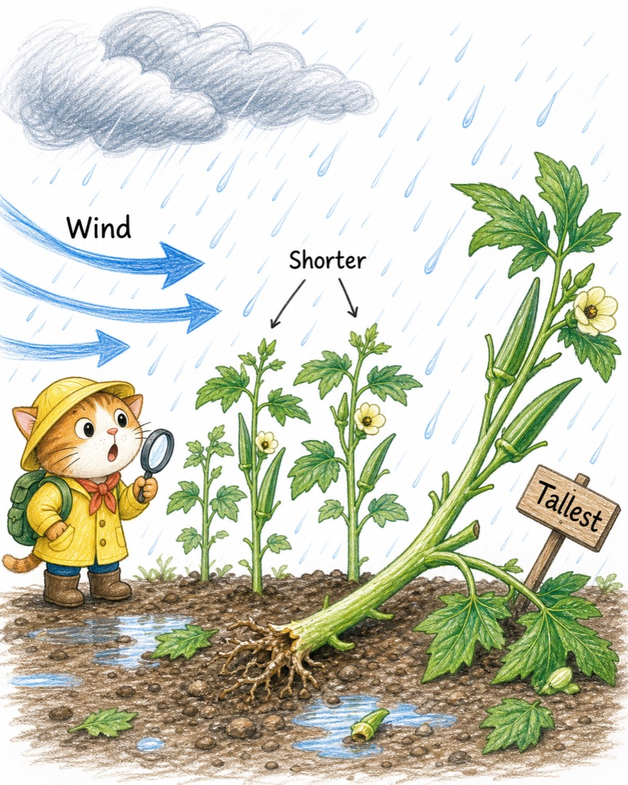
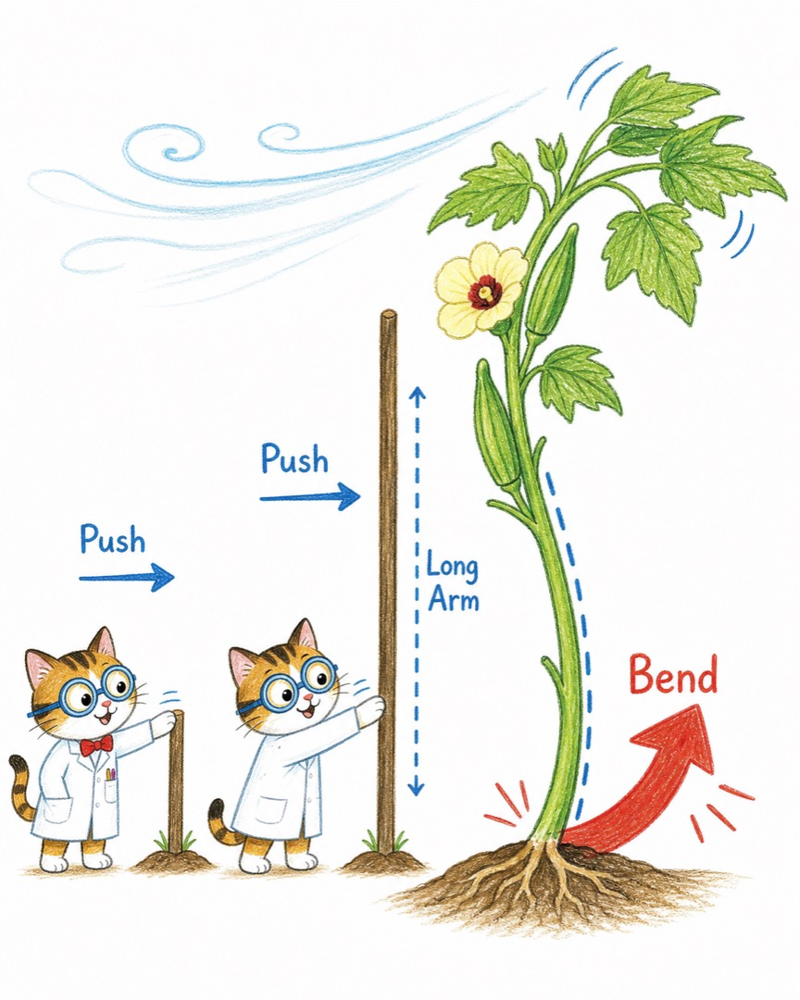
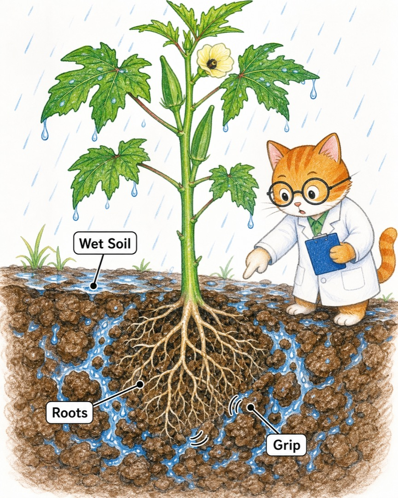
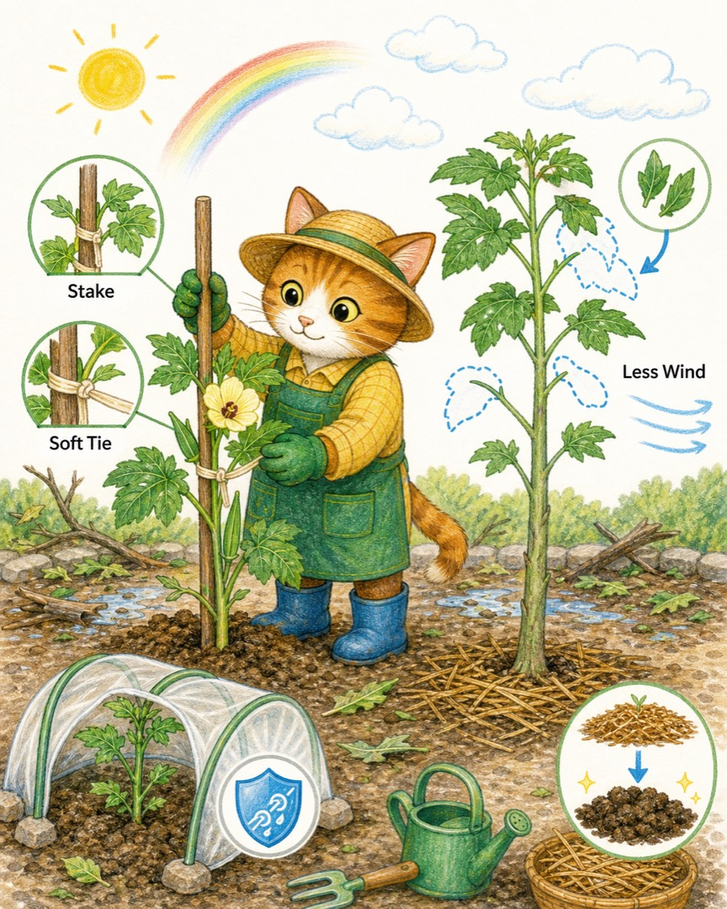
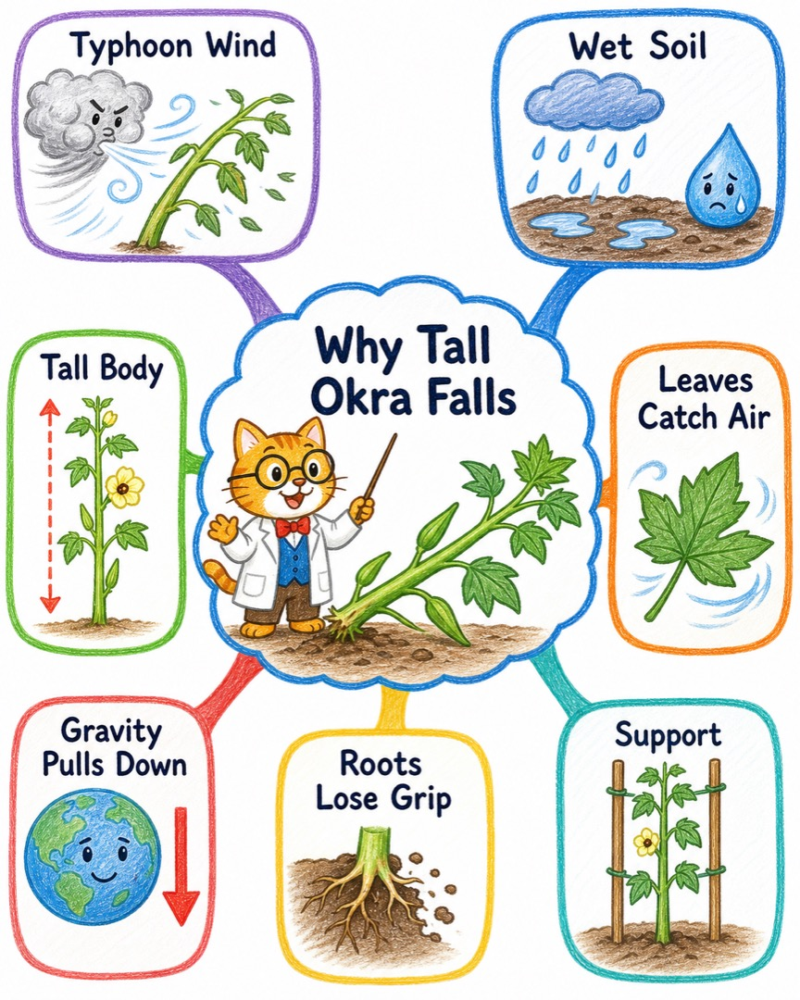

兔兔今天的观察 · 喵博士调查中
台风天之后，最高的秋葵为什么倒了？
兔兔的猜测很准：重力确实一直在向下拉，但真正把最高的秋葵推倒的，通常是台风的横向风力 + 潮湿松软的土 + 高高的身体带来的杠杆效应一起出动。
先把一个大问题拆成四个有趣的小问题
问题一：为什么台风偏偏爱推最高的那一棵？
问题二：秋葵的叶子，会不会像一把把小伞，把风接住？
问题三：雨下大以后，土里的根是不是“抓地力变弱”了？
问题四：如果给它一根支架，或者让它矮一点，它还会倒吗？
核心翻译：在我们的世界里，那其实是……
在我们的世界里，那其实是一场“风推植物、植物推根、根再请求泥土帮忙”的拔河。重力像一只始终往下按的猫爪，让秋葵不能飘起来；可是台风从侧面推来，最先制造摇晃的是风。
最高的秋葵有三个容易被风找到的地方：身体长、顶端远、叶子多。顶端离地面越远，风在那儿轻轻一推，根部就越像被撬棍撬动；叶子越多，接住的风也越多。台风又带来大雨，让泥土变软，根就不容易牢牢抱住土块。
倒伏风险 ≈ 风推得更猛 × 身体更高 × 叶子接风更多 ÷ 根和土的抓地力
所以答案不是“它太高”或“它不够坚固”二选一，而是：它长得高，让风的撬动效果变大；它的根和土在暴雨后变得不够能抓住地面；最后重力把已经倾斜的身体继续往下拉。
故事板：四只小猫怎样把秋葵推倒
第一幕：风猫从侧面来

第二幕：雨猫把土变松

第三幕：高个子把小推力放大

第四幕：支架猫来帮忙

什么时候它不会倒？
如果风很小、土很结实、根系发达，或者秋葵有支架，即使它很高，也可能稳稳站着。反过来，矮矮的植物如果根浅、土松、叶子密，也可能倒。高度是风险放大器，但不是唯一原因。
把答案收进一张小地图

这就是喵博士与探险家共同找到的答案：最高的秋葵不是被重力单独打败的，而是风借了它的高度，雨削弱了它的根，重力接住了最后的倾斜。
喵呜，兔兔还可以继续侦查：如果把同样高的秋葵叶子剪掉一半，哪一棵会更稳？